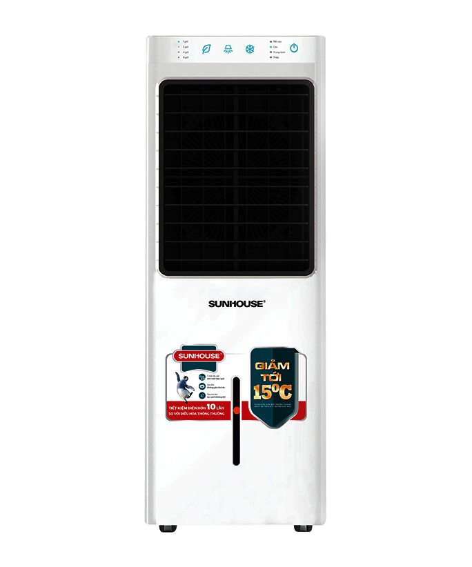
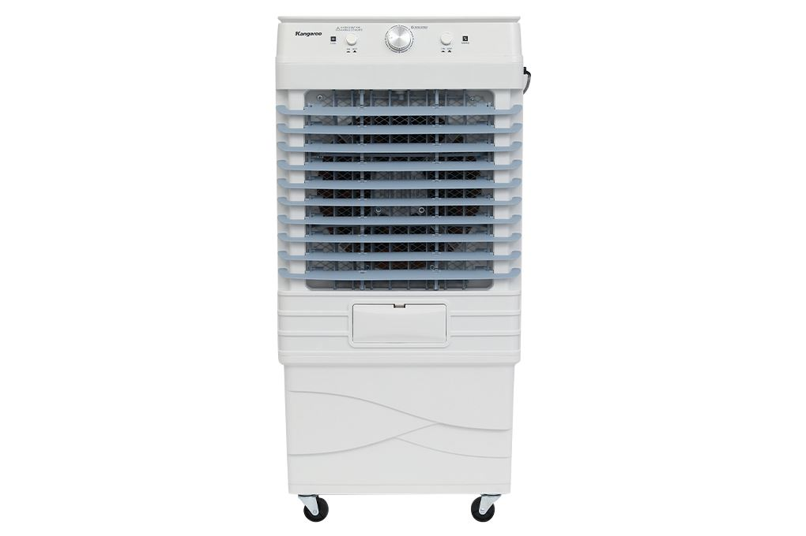
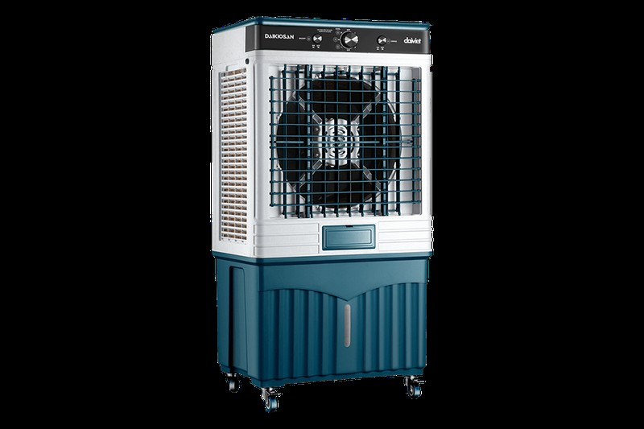
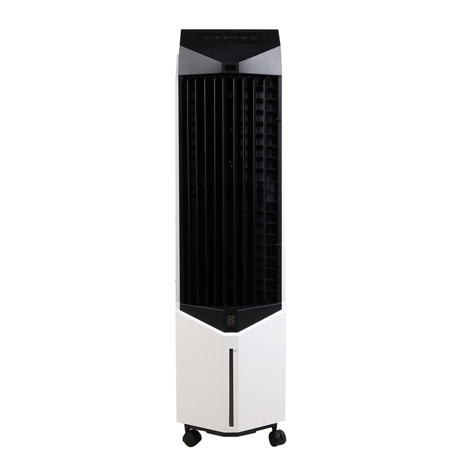

Trả lời thẳng trước: có, mát thật. Nhưng mát theo kiểu khác hẳn máy lạnh: giảm nhiệt độ phòng khoảng 4-8°C bằng hơi nước, không thể lạnh sâu ổn định như máy lạnh. Mua với kỳ vọng "máy lạnh giá 3 triệu" thì chắc chắn thất vọng. Mua đúng nhu cầu thì đây là món đáng tiền nhất mùa nóng.
Hai lưu ý quan trọng. Một, con số "giảm 15°C" trên nhiều trang bán hàng chỉ đạt trong điều kiện lý tưởng: nhiệt độ ngoài trời từ 42°C trở lên, độ ẩm dưới 40%, phòng thoáng. Ở TP.HCM độ ẩm thường 75-85%, đừng kỳ vọng con số đó. Hai, giá trong bài kiểm tra lại ngày 16/10/2026, thông số mỗi mẫu đối chiếu từ ít nhất 2 nguồn bán lẻ.
Vì sao quạt điều hòa không lạnh như máy lạnh?
Quạt điều hòa chạy theo nguyên lý bay hơi nước tự nhiên. Máy bơm nước lên tấm làm mát (cooling pad), quạt hút không khí nóng đi qua tấm ẩm, nước bay hơi mang nhiệt đi, thổi ra luồng gió mát hơn. Không dùng gas lạnh, không có máy nén, nên công suất chỉ 60-300W, rẻ hơn máy lạnh 2-4 lần cả tiền mua lẫn tiền điện.
Cái giá của nguyên lý này nằm ở độ ẩm không khí. Không khí càng khô, nước bay hơi càng mạnh, mát càng rõ. Không khí đã ẩm sẵn thì bay hơi kém, hiệu quả giảm mạnh. Cùng một cái quạt, người ở miền Bắc mùa hè khô nóng khen nức nở, người ở miền Nam mùa nồm thấy nó chẳng khác quạt thường là mấy.
Khi nào NÊN mua quạt điều hòa thay máy lạnh?
- Ở trọ hoặc nhà thuê, không lắp được máy lạnh: không cần khoan tường, không cần thợ, có bánh xe đẩy đi đâu cũng được.
- Không gian mở, bán mở: phòng khách, quán ăn, quán cà phê, sân thượng có mái. Đây là sân nhà của quạt điều hòa.
- Ngân sách hạn chế: 2-8 triệu tiền máy, tiền điện tháng chỉ bằng một phần nhỏ so với máy lạnh.
- Nhà có người già, trẻ nhỏ: gió không lạnh buốt, không sốc nhiệt khi ra vào, không khô da hay viêm mũi như ở phòng máy lạnh lâu.
- Sống ở vùng khô nóng như miền Bắc mùa hè, miền Trung: hiệu quả bay hơi cao nhất, mát rõ rệt nhất.
Khi nào KHÔNG nên mua? (nói thẳng)
- Cần lạnh sâu để ngủ phòng kín: máy lạnh vẫn hơn hẳn, không có gì phải bàn cãi.
- Ở miền Nam mùa nồm, độ ẩm cao liên tục: hiệu quả giảm rõ rệt, tiền bỏ ra không tương xứng.
- Nhạy cảm với tiếng ồn khi ngủ: quạt điều hòa ồn 50-65dB, to hơn máy lạnh cục trong đáng kể.
- Định đóng kín cửa dùng lâu: độ ẩm tăng dần gây oi bức, lâu ngày còn mốc đồ đạc. Dùng sai cách là lỗi của người dùng, không phải của máy.
So sánh nhanh: quạt điều hòa vs máy lạnh
| Tiêu chí | Quạt điều hòa | Máy lạnh |
|---|---|---|
| Hiệu quả làm mát | Giảm 4-10°C, không lạnh sâu | Lạnh sâu, giữ nhiệt độ ổn định |
| Công suất tiêu thụ | 60-300W | 800W trở lên |
| Giá mua | 2-8 triệu | 6 triệu trở lên |
| Lắp đặt, di chuyển | Không cần lắp, có bánh xe | Cố định, cần thợ lắp |
| Độ ẩm không khí | Tăng ẩm (tốt cho da khô) | Làm khô không khí |
| Độ ồn | 50-65dB, ồn hơn máy lạnh | Thấp |
| Không gian phù hợp | Mở, bán mở, phòng trọ | Phòng kín |
Tiền điện chênh nhau bao nhiêu?
Lấy ví dụ cụ thể, đều là số ước tính minh họa. Quạt điều hòa 80-175W chạy 8 tiếng tốn khoảng 0.6-1.4 số điện. Máy lạnh 9000BTU inverter công suất danh định khoảng 700-900W, chạy 8 tiếng tốn khoảng 5-7 số. Tiền điện tháng của quạt điều hòa chỉ bằng khoảng một phần tư đến một phần năm máy lạnh.
Nguyên tắc vàng khi dùng quạt điều hòa
- Mở cửa, mở không gian: càng thoáng, bay hơi càng tốt, càng mát. Đóng kín là cách dùng sai.
- Đổ nước đúng mực, dùng đá khô khi cần mát hơn: đá khô giữ lạnh lâu, không làm loãng nước như đá viên thường.
- Vệ sinh 1-2 tuần một lần: rửa bình nước và tấm cooling pad, tránh rong rêu và mùi hôi. Bình bẩn là nguyên nhân số một khiến quạt có mùi.
- Đừng bật mức gió mạnh nhất khi ngủ: vừa ồn vừa dễ khô họng. Mức nhẹ hoặc trung bình là đủ.
4 mẫu minh họa theo từng nhu cầu
Bốn mẫu dưới đây mình chọn theo nhu cầu phổ biến nhất, thông số đối chiếu từ ít nhất 2 nguồn bán lẻ, giá kiểm tra lại ngày 16/10/2026.
1. Sunhouse SHD7717 — phòng nhỏ 15-30m², gọn và êm ví tiền

Giá tham khảo: khoảng 2.800.000-2.900.000đ (giá thay đổi theo đợt sale)
Con này là đáp án an toàn cho phòng trọ, phòng ngủ nhỏ. Công suất 80W, bình nước 13L, lưu lượng gió 1.500 m³/h, 4 tốc độ gió, làm mát diện tích 15-30m². Có ion âm lọc không khí, điều khiển từ xa, hẹn giờ, tự ngắt khi cạn nước, bảo hành 12 tháng.
- Rẻ nhất nhóm, dưới 3 triệu
- 80W siêu tiết kiệm điện
- Ion âm lọc không khí, tự ngắt khi cạn nước
- Bình 13L, chạy cả ngày phải châm thêm nước
- Không kham được phòng trên 30m²
Hợp với ai: phòng trọ, phòng ngủ 15-30m², người mua quạt điều hòa lần đầu muốn thử với chi phí thấp.
Xem giá tốt nhất trên Shopee →2. Kangaroo KG50F100 — gia đình 35-40m², bình lớn 35L

Giá tham khảo: khoảng 2.590.000đ (Điện Máy XANH) (giá thay đổi theo đợt sale)
Điểm ăn tiền nhất của con này là bình nước 35L, đổ một lần dùng cả tuần mới phải châm. Công suất 110W, lưu lượng gió 4.500 m³/h, làm mát 35-40m², độ ồn tối đa chỉ 50dB nên để phòng ngủ được. Kèm 2 hộp đá khô, tự ngắt bơm khi cạn nước, đảo gió 2 chiều, bảo hành 12 tháng.
- Bình 35L, cả tuần mới châm nước một lần
- Ồn tối đa 50dB, êm nhất nhóm phổ thông
- Giá tốt so với những gì nhận được
- Máy cao khoảng 1m, chiếm chỗ trong phòng nhỏ
Hợp với ai: gia đình cần làm mát phòng khách 35-40m², người lười châm nước, người cần máy êm để ngủ.
Xem giá tốt nhất trên Shopee →3. Daikiosan DM103 — không gian lớn, phòng khách rộng hoặc quán

Giá tham khảo: khoảng 3.100.000-3.500.000đ (Điện Máy XANH 3.090.000đ) (chênh giá lớn giữa các kênh, kiểm tra kỹ khi mua)
Con "trâu" của danh sách. Công suất 175W, bình nước 72L lớn nhất nhóm, lưu lượng gió 4.500-5.000 m³/h, làm mát 45-55m². Có công nghệ diệt khuẩn Ag+, cảm biến mực nước, 2 hộp đá khô, đảo gió tự động, bảo hành 12 tháng.
- Bình 72L, lưu lượng gió lớn nhất nhóm
- Diệt khuẩn Ag+, cảm biến mực nước
- Giá tốt so với cấu hình
- Độ ồn 55-68dB, ồn nhất nhóm, không hợp phòng ngủ
- Máy to nặng, hợp phòng khách rộng hoặc quán ăn, quán cà phê
Hợp với ai: phòng khách trên 40m², quán ăn, quán cà phê cần làm mát không gian mở rộng.
Xem giá tốt nhất trên Shopee →4. Boss S106 — nhập Thái Lan, êm và đẹp

Giá tham khảo: khoảng 5.900.000-6.600.000đ (Điện Máy XANH 6.590.000đ) (chênh giá lớn giữa các kênh)
Hàng nhập Thái Lan, hoàn thiện và độ êm là điểm mạnh nhất. Công suất 160W, bình nước 28L, lưu lượng gió 2.000 m³/h, độ ồn dưới 50-60dB tùy nguồn. Có điều khiển từ xa, hẹn giờ 1-8 giờ, ion âm, tự ngắt bơm khi hết nước, bảo hành 12 tháng (một số shop ghi 2 năm — hỏi rõ khi mua). Một lưu ý trung thực: các shop ghi diện tích làm mát khác nhau (15-20m², 22-28m², 30-35m²), nên mình ghi khoảng thận trọng 15-28m².
- Êm nhất nhóm, hoàn thiện tốt, thương hiệu Thái
- Điều khiển từ xa, hẹn giờ, ion âm đầy đủ
- Đắt gấp đôi nhóm phổ thông
- Diện tích làm mát các shop ghi không đồng nhất
Hợp với ai: người kỹ tính về độ êm và hoàn thiện, phòng 15-28m², ngân sách dư dả.
Xem giá tốt nhất trên Shopee →Mua ở đâu để không dính hàng dựng?
Quạt điều hòa là món hay bị dựng lại và bán giá rẻ bất thường trên chợ mạng. Mấy nguyên tắc của mình: chỉ mua ở gian hàng chính hãng (Shopee Mall, LazMall) hoặc siêu thị điện máy lớn; đừng ham rẻ hơn 30-40% giá thị trường; kiểm tra mã sản phẩm và tem bảo hành khi nhận hàng; và chạy thử tại chỗ, nghe tiếng ồn, kiểm tra bơm nước trước khi ký nhận.
Các nút "Xem giá" hiện dẫn tới kết quả tìm kiếm Shopee theo đúng tên + mã sản phẩm (blog đang chờ Shopee duyệt affiliate) — bạn tự chọn gian hàng chính hãng (Shopee Mall) trong kết quả trước khi mua nhé.
Kết luận: nên mua khi nào, chọn mẫu nào?
- Phòng trọ, phòng nhỏ 15-30m², ngân sách thấp: Sunhouse SHD7717, dưới 3 triệu, gọn và tiết kiệm điện.
- Gia đình, phòng khách 35-40m², cần máy êm: Kangaroo KG50F100, bình 35L cả tuần mới châm nước.
- Không gian lớn trên 40m² hoặc quán: Daikiosan DM103, gió mạnh bình lớn, chấp nhận ồn.
- Kỹ tính, thích êm và đẹp, ngân sách dư: Boss S106 nhập Thái.
Quy tắc nhanh: mua đúng diện tích phòng, dùng ở nơi thoáng mở cửa, vệ sinh định kỳ — và đừng kỳ vọng nó lạnh như máy lạnh. Đúng kỳ vọng thì đây là món đáng tiền nhất mùa nóng.
Câu hỏi thường gặp
Quạt điều hòa có tốn điện không?
Không đáng lo. 80-175W chạy 8 tiếng tốn khoảng 0.6-1.4 số điện, chỉ bằng một phần tư đến một phần năm máy lạnh cùng thời gian.
Dùng trong phòng kín, đóng cửa được không?
Không nên. Phòng kín làm độ ẩm tăng dần, càng dùng càng oi, lâu ngày còn mốc đồ đạc. Phải mở cửa cho thoáng, ngược hẳn với cách dùng máy lạnh.
Có nên đổ đá lạnh vào bình nước cho mát hơn?
Nên dùng đá khô (thường kèm theo máy), giữ lạnh lâu. Đá viên thường cũng được nhưng tan nhanh làm loãng nước, nhớ vệ sinh bình sau đó.
Bao lâu vệ sinh quạt một lần?
1-2 tuần rửa bình nước và tấm cooling pad một lần. Bình bẩn là nguyên nhân số một khiến quạt có mùi hôi.
Nhà có trẻ sơ sinh dùng được không?
Được, và đây là một ưu điểm lớn: gió không lạnh buốt, không sốc nhiệt, không khô da như phòng máy lạnh. Chỉ cần để máy xa nôi, bật mức gió nhẹ.